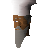

Master Chef

| Config name | newbie_cook_instructor |
| NPC id | 942 |
| Combat level | hidden |
| Options | Talk-to |
| Wander range | 2 tiles from spawn |
| Defined in | scripts/tutorial/configs/tutorial.npc |
Master Chef
An expert on all things culinary.
Show all 1 spawn on the world map → Open in knowledge graph →
Locations
| Area | Coordinates | Level | Count | Map |
|---|---|---|---|---|
| Tutorial Island | 3075, 3085 | 0 | 1 | view |
Dialogue
Master ChefAh... welcome newcomer. I am Lev, the chef. It is here I will teach you how to cook food truly fit for a king.
PlayerI already know how to cook. Brynna taught me just now.
Master ChefHA HA HA HA HA HA! You call THAT cooking? Some shrimp on an open log fire? Oh no no no... I am going to teach you the fine art of cooking bread.
Master ChefAnd no fine meal is complete without good music so we'll cover that while you're here too.
Master ChefTime for you to learn the fine art of cooking bread.
Master ChefHello again.
Referenced in scripts
scripts/tutorial/scripts/guides/master_chef.rs2